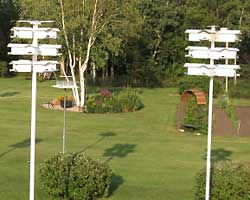

Welcome to NorthernSkys.ca
Hello, my name is Bob Buskas, welcome to my "Northern Sky's" Purple Martin colony website, and home of the NORTH STAR Purple Martin house and the BUSKAS BUNGALOWS.
I design and sell birdhouses as a hobby and I enjoy sharing my knowledge with others.

I named my website "Northern Sky's", because each spring I find myself looking to the sky and listening for the arriving Purple Martin's (PM's). They have just completed the long migration to my "Northern Sky's" colony site here on the farm southeast of Wetaskiwin, Alberta, from their wintering grounds in the Amazon Basin in Brazil. Watching their excitement and actions, tells me they are just as excited about their spring arrival as I am. As they swoop over the colony site, singing loudly, it is time to raise up their houses and say hello, another nesting season has begun.
You may notice I referred to the houses as theirs... yes I built them, but as far as the Martins are concerned they belong to them. Once they nest successfully, they will return to their house faithfully each spring for as long as they live.
Rather amazing isn't it?
These wonderful swallows provide my family with countless hours of vocalizations, amazing flying abilities and indescribable antics. They catch thousands and thousands of bugs each season.
Anyone can start their own Purple Martin colony! The once daunting task has become easy due to research and publicly available information. A colony requires proper housing, management, and location. A good mentor such as myself or an experienced landlord in your neighborhood can help you make the right choices.
For myself; tracking the migration northward on the Internet, the challenge of attracting my first nesting Purple Martin (Mr. T), and watching him build the colony I now have, has been a wonderful experience.
I also enjoy woodwork, building NORTH STAR houses, BUSKAS BUNGALOWS as well as Sparrow and Starling traps. I always like to have a few on hand in case someone wishes to purchase one, so martineering has become a great year round hobby for me......... or obsession as my wife Irene says. Also meeting many wonderful people both locally and all across North America has been so much fun.
I'm always looking for little changes to improve the housing and finding easier ways to control Starlings or maybe someday building the perfect Sparrow trap. Also helping to mentor people when starting and managing their colonies, are all the things I enjoy.
The most important thing is that we all work together for the betterment of the PM.
Purple Martin numbers have recovered unbelievably well in Alberta since the mid 1990's. Actually, the population is now at an all time high in Alberta. Local Martin landlords with help from the internet and just local word of mouth are now well educated on good colony management. I am extremely pleased that my “North Star” house design with the slide out nest trays, has made it so easy for landlords to manage their sites. Fast and easy nest checks and maintenance as well as S&S control is the key to a successful colony.
My colony here at “Northern Sky’s” has grown from just one pair “Mr. T ” in 1996 to a “Super Colony ” of 90 plus pair in just over a decade, fledging close to 400 nestlings a year. If someone would have told me back then that I would have a “Super Colony” in 10 or 12 years, I would not have believed them. I now offer 100 compartments here at “Northern Sky’s” and will not expand any further. The youngsters will have to move on and establish their own colony as my “Mr. T ” did here back in 1996.
Country 9 colony “Country Nine” golf course (my second colony) has 48 compartments and is pretty much 100 % full each year as well, fledging over 200 nestlings. If you like camping and golfing, check out “Country Nine” located just 4 km. north of Bashaw on Hwy 21. They have daily camping available in Colonial Village campground, so you can camp with the Martins as I have one house located in the centre of the camp ground, and the remainder near the club house. If you love golfing and birding as I do, this is the place to be. Please stop in and visit me at camp site #34. I will be glad to show you around and maybe we can do a round of golf, there are lots of Tree Swallows and Mountain Bluebirds along the course as well.
Here at "Northern Sky's" Colony, located 1km South of Secondary Hwy. 611, on Range Road 230, Southeast of Wetaskiwin, (see map). You can take a look at the very latest in Martin house designs, Gourds, as well as Starling and Sparrow traps which I have on hand. I also have a Nest Cam installed in a North Star house. So you can sit in comfort in my wood work display room and watch on television, the goings on in an active Martin nest, what you will see is truly amazing!
Feel free to stop in for coffee any time.
On guard is my best friend "Billy."